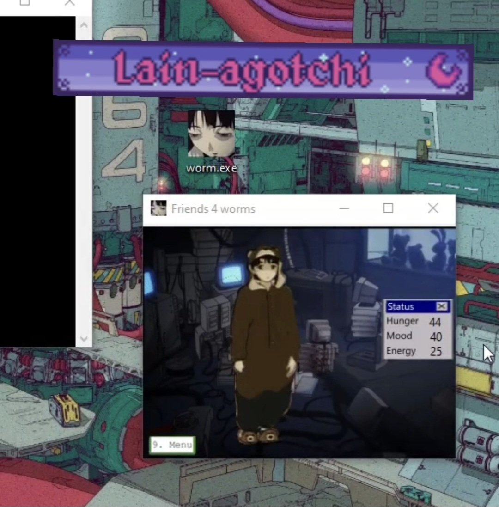
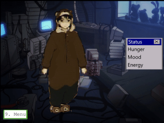

Virtual Friend A.K.A worm.exe
4 losers

This is a virtual friend style game I made, inspired by the Tamagotchis of the early 2000's and other "virtual pet" style games.
It's not the most exciting gameplay wise, but it was a lot of fun to make and to see if I could even do it. I ended up learning a lot in the process
Introduction:
The friend in question is Lain from the 1998 anime "Serial Experiments Lain".
Here is a download link to my virtual friend program, it might get flagged as suspicious from your anti-virus because it's an executable file, and despite the name "worm.exe" there is no computer worm inside it xD From the start of this project I knew I wanted to have this run inside of my Zenith remote. I hadn't built it yet though so I wrote all the code for windows first and then ported it to the raspberry. Process: I made simple animations out of screenshots from the anime, isolating Lain and segmenting the body where I would make it move I've never tried animating like this before but it turned out pretty good I think. Nice for me because I suck at drawing and I just use a trackpad on my computer so it can be difficult to get details right.
And I didn't need much motion, just enough to add a bit of life/make simple idle animations. Here is the result Looking closely it looks a bit messy, but considering my display is 2 inches-240x320, it doesn't really matter Here is another example, with the original clip on the right, and my edit on the left
Here is a good article descibing the gist of the show if you haven't seen it
Lain Spoiler
Step 1


 [I'm not the most skilled at using "clone stamp" style tools so you can see where I removed the persons red jacket from the original, the background looks a bit weird.
But I think it's only noticable if your looking for it, and see it side by side with the original. Seeing my edit by itself it's unnoticable I think.
[I'm not the most skilled at using "clone stamp" style tools so you can see where I removed the persons red jacket from the original, the background looks a bit weird.
But I think it's only noticable if your looking for it, and see it side by side with the original. Seeing my edit by itself it's unnoticable I think.

Step 2:

Next I wrote out the main bare bones portion of the code without any animation or stats, just text based, to get the basic logic and everything functioning in order. Even just a terminal text based adventure would be fun to program sometime
Step 3:
Next is figuring out how ill display/hide/navigate through my animations with button inputs. I experimented with displaying my animations directly into the terminal but the few libraries I tried seemed to have the limitation of it turning out VERY pixely. It is kind of a vibe though, especially when you think about how the old Tamagotchis used to look. It was cool to try anyways and I might do something like this for another project.

In the end I decided on building my first python GUI, which I made using the Tkinter library. [I would later learn that this is notoriously bad at handling animation lol]. Basically you cant just load up a gif file like any other image
you have to program Tkinter to go through each frame and repeat. Fine and dandy. But then I discovered that switching back and forth from each gif makes them incrementaly speed up, so every time you press a button poor lain is dancing
like she took too much Accela in club Cyberia
 This took some messing around for me to get working properly, as well as other bugs with tkinters gif handling where it would display the animations all distorted for some reason. In the end the solution was to import the PIL library and use it to open the image as a variable first,
and then pass it onto tkinters photoimage function. A bit silly and round about but it worked like a charm :).
This took some messing around for me to get working properly, as well as other bugs with tkinters gif handling where it would display the animations all distorted for some reason. In the end the solution was to import the PIL library and use it to open the image as a variable first,
and then pass it onto tkinters photoimage function. A bit silly and round about but it worked like a charm :).
Step 4:

Next I created 3 variables for Hunger/Mood/Energy that start at 25 and I scheduled a function to decrease their values by 1 every x minutes. And also add x amount back on when completeing a task through the Action Menu I made, such as sleeping to increase Energy. Still fiddling with the values and decay rates to make it not too annoying, but as of now [worm.exe V2.2] its as follows:
Hunger decays by 1 every minute. Mood decays by 1 every 2 minutes. Energy decays 1 every 4 minutes. If either Energy or Hunger goes below 20, then Mood goes to 0 and triggers Lain=Mad.

Mood cannot be increased if Energy OR Hunger are below 20. If either Hunger or Energy reach 0 then it triggers Lain=Dead.

I also had to make sure it doesn't go negative and also you can't overcharge past 100 by spamming Actions.
I also made it so the stats dont decay until youve gone through the first 2 intro screens and actually started the "game", as well as while performing an action. Quitting to the main friend select menu will restart Lains stats. Step 5: At this point in the project I have the program controlled by keyboard presses [# 1-9], so to have it run on my rpi I need to import the gpiozero library and change my keybinds to programed gpio button presses. Now that the code is all programmed it would be a breeze to add in other characters or some of my own designs, and I have set it up that it can be added in on a "Friend Select" menu right when you boot up.
Not sure if I ever will though. All you'd really have to do it copy/paste the main code and swap out the animation art files/maybe edit a menu or too. I do think a virtual friend Carl from "Aqua Team Hunger Force" would be 2wicked.
I think the old Tamagotchis if you got down to 0 your pet would just straight up die, but thats so cruel lol. So instead I made Lain transcend to the wired if she stays awake/starves too long

Seeing as I have it running beautifully on windows I decided to make it a standalone
executable file using pyInstaller. What this does is bundles up what is required for python to run the script, so that people who don't have python installed on their computers can still run my program.
This is good too because bundled up as an .exe people won't see my noob/beginner "spaghetti code" lol. It ended up being around 486 lines of code(without the video player extra menu)